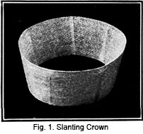
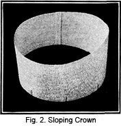
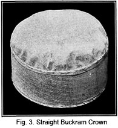
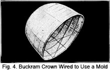
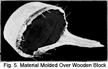
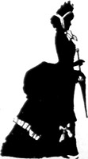

1928—The New-Way Course in Millinery and Hat Design
Lesson 7—Buckram Crowns
Buckram Crowns
Making Paper Patterns for Buckram Crowns
Having once mastered the making of brims, you will have no difficulty in making crowns. Crowns may be round or square; they may be straight or they may be high on one side and low on the other. You will find the paper pattern an invaluable guide in making the crown. The pattern is made and fitted to the head of the person for whom the hat is being made.
Pattern-making is the foundation of frame-making—and every good milliner knows the technique of hat-making from the very foundation.
Slanting Crown
Let us pretend that you want to make a hat with a slanting side crown. You do not want to cut the buckram frame until you are sure that you have a slanting crown that will be becoming, that you will like. Proceed in this manner to cut your pattern:
1. First cut a piece of manila paper one-fourth of an inch wider than the height of the crown and one-half an inch longer than the headsize wire measure. Be sure to get the correct dimensions for the paper.
2. Slash this paper across in four places, equally distant from one another, within one-fourth of an inch from the top edge.
3. Lap the slashes at the bottom a little more than one-fourth of an inch. This will take about one and one-half inches from the paper.
4. Pin the slashes.
5. Lap the ends of the paper one-fourth of an inch and pin together.
6. Now place this pattern on the brim with the joining at the back and pin to the upturned slashes on the brim.
7. Try on and see if the frame fits perfectly and is becoming. You may have to make alterations. If the crown is too slanting or too straight, make the necessary changes.
When making a buckram frame, whether from a pattern or otherwise, it is important that the beginner try on the frame frequently in order to achieve the exact lines and curves that are becoming to the face. This requires constant practice and concentration. It is not possible to make a charming, attractive hat in a hurried, slip-shod way.
8. The tip (top) is perfectly round, cut to fit the top of the side crown just made. In cutting this tip it will be necessary to use a softer paper to get the desired effect. Later, when making finished hats, this tip will be cut from crinoline, allowing one- half inch all around for attaching to the side crown.
Sloping Crown
1. Cut a piece of manila paper the length of the headsize and as wide as you wish the highest side of the crown to be.
2. Lap the ends of the paper one- fourth of an inch and pin together.
3. Now pin this pattern on the brim with the joining at the back.
4. Try on the pattern, and decide how much slant you desire. Hats should slope downward from the left to the right side.
5. Beginning at the left side, cut the pattern so it slopes gracefully downward to the lowest point on the right side.
6. The pattern for the crown tip should be cut in the same way as that for the slanting crown.
Straight Crown
1. Cut a piece of manila paper the length of the headsize, allowing one-fourth inch at each end for lapping, and as wide as you desire the crown to be.
2. Lap the ends of the paper one-fourth inch and pin together.
3. Pin the pattern on the brim with the joining at the back.
4. Make pattern for crown tip as instructed in slanting crown.
Making the Buckram Straight Crown Frame
1. Open the crown pattern and cut the buckram, following the lines of the pattern.
2. Lap and join at the center back. Be sure that this band fits the head loosely, so that when finished it will be exactly right.
3. Oversew brace wire to each edge to give strength and firmness.
4. These edges should now be bound with bias crinoline. This is done in the same manner as the edge of the brim was wired and bound.
5. Try the finished band on, in its proper position on the head. To be the right size, you should be able to slip one finger underneath it. When joining the band at the center back, machine stitch or use a stab stitch, taking them straight through and through, each stitch running diagonally. Begin at the bottom and work to the top, then proceed to work from top down. While coming down, your second stitches will cross the first, and thus you will have the firm, old-fashioned cross-stitch.
6. Mark the center front and back of your crown band and also the sides.
7. Cut the crown tip of crinoline according to the pattern.
8. Mark the center front, center back and side lines. Then pin to the top of the side crown, being sure that the four points of the crown tip match the four points of the side crown. Do not stretch it, but leave it loose. Pin securely at the four points, and also at the points half-way between them.
9. This completes the frame for your crown. If you are making an extremely stiff sailor hat, use tailor's canvas for the crown tip and give it three coats of shellac. After the crown tip has been attached to the side crown, all edges should be trimmed neatly and evenly to insure a fine finish when the hat is covered.
10. Very often crowns are made with no buckram foundation. This is especially true of sports hats, and of hats made of very fine materials. The woman who has a large head, or who has a great deal of hair, finds the soft crown very much more comfortable.
11. When there is no buckram foundation for the crown, it is necessary to make a sectional crown or a round crown drape. These two types of crowns will be taken up in detail later and you will not only learn the method of making them, but the correct materials to use.
Molded Crowns
If you have examined the buckram frames purchased in the millinery stores you will learn that they are made all in one piece. These frames are molded. You will no doubt wonder how this is done, so I am going to explain it to you.
In order to make a molded crown it is necessary to have a regular hat mold. These are often made of wood and may be purchased at a millinery supply house or a carpenter or cabinetmaker could make a block for you.
For the home milliner who does not wish to invest much in the millinery equipment, it is possible to make a block or mold from a buckram crown. Purchase a crown at the millinery store and I will tell you exactly how to wire it so that it will be firm. I do not recommend this in place of a wooden block, but it will serve the purpose very nicely if you do not care to purchase the other kind.
Take a piece of medium sized millinery wire and follow these directions carefully. This piece of wire should be two inches longer than needed. This is determined by starting at the lower edge of the crown in front and passing it over the crown and to the back, letting the wire extend over the edge one inch both back and front. Now that the wire is measured and cut, start at the front and sew the wire to the inside of the crown. Fig. 4 will show you exactly how it is done. Use the stab stitch and sew the wire up the front, over the top and down the back and be sure to have the one inch extend over the edge. This divides the crown in half from front to back. The extra one inch at the edges should be bent with the pliers and overcasted to the edge.
Now that the crown is reinforced from back to front it will be necessary to do the same from side to side. This is accomplished in exactly the same way and divides the crown in quarters. With another piece of wire divide each quarter in half. You will notice that the crown is divided in eight parts and it has taken four pieces of wire to accomplish this.
It is now necessary to have wire running around the crown in order to give it the necessary support. To accomplish this cut a piece of wire two inches longer than the circumference of the crown. Begin at the center of the back about one inch from the base of the crown, and sew this wire around the crown parallel to the base. Overlap the wire one inch at the center back. Place two more wires one above the other, each about one and one-half inches apart. Let the top make a circle about 2 or 3 inches in diameter.
In order to support the crown at the opening it is best to place the brace wires, one from the front to the back and another from one side to the other. Remember to leave at least one inch at each end so that it may be bent back and sewed to the lower edge of the crown. These brace wires will hold the crown securely.
Now that the block is made, we must learn exactly how to cover it, so that we can make a one-piece crown. There are two ways of preparing the material and I will explain each in order. Buckram or crinoline may be used, depending on whether a very stiff crown is desired. As you already know, the foundation materials for hats are all heavily sized, that is, they are stiffened by using glue. In order to soften this material it is sponged with water, and in this way it can be handled more easily. The material should be cut at least one and one-half inches longer than the amount needed to cover the crown.
Pin the straight of the material to the front, back and sides. The pins may be stuck into the buckram to hold it secure. Now stretch the material and pull it so that all the fullness will be removed. You will have to work at this until it is exactly right for the crown must be perfectly smooth in order to look exactly right. Allow the material to dry over the mold, and in this way it will become stiff.
The other method is to pin the material over the mold when it is dry and then place it over the steam of the tea kettle until it becomes moist enough to pull in shape. Be sure to pull the material until all the fullness is removed.
After the material is thoroughly dried, remove it from the mold by loosening with a long needle. Trim the lower edge and wire it in the same way you did when finishing a buckram brim.
Of course, it takes time to make one of these hand blocked crowns and many people find it more convenient and therefore prefer to purchase the crown already blocked. These crowns may be purchased from some millinery or department store and from many mail order companies.
To be sure, the machine blocked crown will stand more handling than the one made at home. Then, too, the pressed crown has a smoother and more finished appearance than the one made by unskilled hands.
It is also possible to mold the turned brims of the hat by making them over wire frames. The making of these frames was carefully explained in an earlier lesson.
In case you do have a wooden block, the task may be much easier accomplished. Fig. 5 will give you an idea of how this is done. This crown is made of crinoline and has been stretched over the block and is allowed to dry. It is slipped off and the edges cut and wired, then they are bound with crinoline.
This lesson on making crowns is a very important one and I want you to be sure that you have mastered every detail before you go on to the next lesson. If you can make the kinds of crowns that have been mentioned, you will have no trouble making crowns for soft hats which will be taken up in a later lesson.
LESSONS 6 AND 7
QUESTIONS
1. What is buckram?
2. Which is the right side of buckram?
3. Why is it necessary to handle buckram carefully?
4. What is crinoline and where is it used?
5. What is the purpose of the bias crinoline binding on the edge of a buckram frame?
6. Why should a paper pattern be used when cutting buckram frame?
7. When making slashes in a buckram frame how much should they be lapped?
8. How many slashes should be made when making the poke bonnet shape?
9. How do you form the petals for the rose petal hat?
10. Instead of lapping the slashes in a flare hat what is set in?